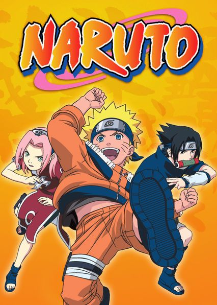

Dragon Ball Z

Criada por Akira Toryiama, a franquia conta a história de Son Goku, guerreiro que descobre ser parte de um legado de poderosos conquistadores alienígenas - e passa a defender seu planeta adotivo, a Terra, de outros seres igualmente superfortes e capazes de feitos descomunais.
Naruto
Naruto é um jovem órfão habitante da Vila da Folha que sonha se tornar o quinto Hokage, o maior guerreiro e governante da vila. Ao se graduar como ninja, descobre que tem um demônio raposa selado dentro de si.
Bleach
Kurosaki Ichigo é um garoto de 15 anos que pode ver, tocar e falar com espíritos de pessoas mortas. Até que um dia ele encontra Kuchiki Rukia, uma Shinigami (deus da morte), e descobre posteriormente que também é um Shinigami. Agora, com seus poderes, ele terá que proteger sua cidade de forças do mal.
Jujutsu Kaisen
Jujutsu Kaisen é um anime sombrio que lida com elementos sobrenaturais como maldições, espíritos e feitiçaria. O anime começa com a morte do avô do protagonista, Yuji Itadori. Antes de morrer, ele pede que Itadori viva uma vida em que ele possa escolher como morrer sem ter arrependimentos.
Death Note

O jovem estudante Light Yagami achar um caderno com poderes sobrenaturais, chamado Death Note, no qual era possível matar uma pessoa apenas escrevendo seu nome no caderno. Quando o descobre, Light tenta eliminar todos os criminosos do mundo e dar à sociedade um mundo livre do mal.
Vinland Saga
Quando criança, Thorfinn se sentou aos pés do grande Leif Ericson e se emocionou ao ouvir contos selvagens de uma terra distante ao oeste. Mas suas fantasias juvenis foram destruídas por um ataque inesperado de um mercenário.
Monster
A trama gira em torno de Kenzo Tenma, um cirurgião japonês que vive na Alemanha cuja vida é abalada após se ver no caminho de Johan Liebert, um de seus ex-pacientes, que se revela um serial-killer psicótico.
Akira

Uma grande explosão fez com que Tóquio fosse destruída em 1988. Em seu lugar foi construída Neo Tóquio, que, em 2019, sofre com atentados terroristas por toda a cidade. Os amigos Kaneda e Tetsuo integram uma gangue de motoqueiros. Eles disputam rachas violentos com uma gangue rival, os Palhaços, até que um dia Tetsuo encontra Takashi, uma estranha criança com poderes que fugiu do hospital onde era mantido como cobaia.